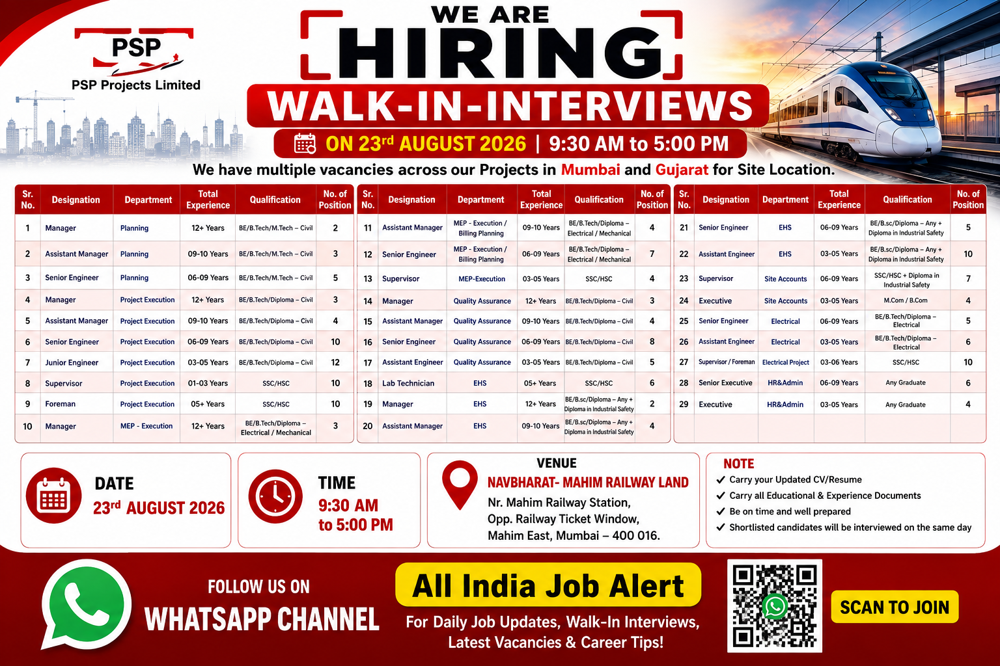

PSP Projects Limited has announced multiple vacancies for experienced professionals across its projects in Mumbai and Gujarat. The recruitment drive includes opportunities in planning, project execution, MEP execution, quality assurance, EHS, site accounts, electrical projects and HR & administration departments.
The recruitment is particularly suitable for candidates who have relevant experience in construction, infrastructure, project execution, planning, quality control, safety, electrical, mechanical, MEP and administrative functions. The recruitment poster mentions multiple positions at different experience levels, ranging from junior engineering and supervisory roles to manager and assistant manager positions.
Company: PSP Projects Limited
Interview Type: Walk-In Interview
Interview Date: 23 August 2026
Interview Time: 9:30 AM to 5:00 PM
Project Locations: Mumbai and Gujarat
Interview Venue: NAVBHARAT – MAHIM RAILWAY LAND, Mahim East, Mumbai
Industry: Construction, Infrastructure, Project Execution and Engineering
Get construction jobs, engineering vacancies, walk-in interviews and other latest job updates directly on WhatsApp.
Join WhatsApp ChannelThis walk-in recruitment drive provides an opportunity for experienced construction and engineering professionals to attend an interview directly at the mentioned venue. According to the recruitment poster, PSP Projects Limited has multiple vacancies across projects in Mumbai and Gujarat. The available positions cover several important departments that are essential for successful construction project delivery.
The vacancies include planning professionals, project execution engineers and supervisors, MEP professionals, quality assurance engineers, EHS professionals, site accounts executives, electrical engineers and HR administration staff. Because the vacancies are available at different levels, candidates with different amounts of professional experience can check the requirements and identify the position that best matches their background.
Candidates attending the walk-in interview should carefully review the designation, department, experience requirement and educational qualification before attending. Applicants should carry an updated resume and relevant educational and experience documents. It is also advisable to reach the venue early because walk-in interviews can involve registration, document verification and interview waiting time.
Planning professionals are responsible for helping construction teams maintain project schedules and monitor progress against planned targets. The Manager, Assistant Manager and Senior Engineer positions in Planning are mainly intended for Civil Engineering professionals with relevant experience. Candidates should have a good understanding of construction planning, project schedules, coordination and progress monitoring.
Project Execution is one of the largest categories in this recruitment drive. Positions range from Manager and Assistant Manager to Senior Engineer, Junior Engineer, Supervisor and Foreman. Candidates with Civil Engineering qualifications or relevant site experience can consider the appropriate position based on their experience.
Project execution professionals generally coordinate site activities, monitor construction progress, communicate with subcontractors and ensure that work is carried out according to drawings, specifications and project requirements. Supervisors and foremen may be involved directly in daily site activities and workforce coordination.
The MEP department includes opportunities for Managers, Assistant Managers, Senior Engineers and Supervisors. The listed educational background includes Electrical and Mechanical Engineering qualifications. Candidates with experience in MEP execution, electrical works, mechanical works, billing planning and site coordination may find these positions relevant.
Quality Assurance positions are available at Manager, Assistant Manager, Senior Engineer and Assistant Engineer levels. These positions require Civil-related qualifications according to the recruitment poster. Quality professionals are generally responsible for ensuring that construction activities follow approved specifications, quality procedures, inspection requirements and project standards.
The EHS department includes Manager, Assistant Manager, Senior Engineer, Assistant Engineer and Lab Technician opportunities. Candidates with relevant educational backgrounds and industrial safety qualifications should carefully check the requirements before attending the interview. Experience in construction-site safety, industrial safety procedures, documentation and workforce safety can be useful for these roles.
📅 Date: 23 August 2026
⏰ Time: 9:30 AM to 5:00 PM
📍 Venue: NAVBHARAT – MAHIM RAILWAY LAND
📌 Address: Near Mahim Railway Station, Opposite Railway Ticket Window, Mahim East, Mumbai – 400016.
Eligible candidates can attend the walk-in interview directly at the mentioned venue on 23 August 2026 between 9:30 AM and 5:00 PM. Candidates should carry an updated CV/resume and relevant educational and experience documents.
Applicants should carefully check their experience and qualification against the position they want to attend for. Candidates applying for senior positions should be prepared to explain their previous project responsibilities, technical knowledge, team management experience and site exposure during the interview.
It is recommended that candidates reach the venue with sufficient time before the interview closing time. Walk-in recruitment can involve registration and document verification, so candidates should avoid arriving at the last minute.
This recruitment drive is mainly suitable for candidates with experience in construction, infrastructure, project execution, planning, MEP, quality assurance, EHS, electrical projects, site accounts and HR administration. Civil and Mechanical Engineering candidates can check the engineering positions, while candidates from safety, accounts, electrical and HR backgrounds can check the respective vacancies.
Candidates should not apply randomly for positions that do not match their qualification or experience. Selecting a suitable position can help the recruitment team understand the candidate's profile more easily. Experienced professionals should highlight major projects, previous designations, responsibilities and relevant technical skills in their CV.
Job seekers should never share sensitive financial information with unknown persons. Candidates should also be careful about recruitment fraud and should independently verify any request for payment, registration fees or other charges before making a transaction.
Join our WhatsApp Job Alert Channel for construction jobs, engineering jobs, walk-in interviews and latest recruitment updates.
Join WhatsApp ChannelConstruction projects require professionals from multiple disciplines, including planning, execution, quality, safety, MEP, electrical and administration. This recruitment drive provides vacancies across several of these departments and at different experience levels.
For experienced professionals, opportunities at Manager and Assistant Manager levels can provide a chance to work in project leadership, planning, execution and departmental coordination. Engineers and supervisors can also check vacancies according to their current experience level.
Candidates should prepare for the interview by reviewing their previous project experience and being ready to discuss their responsibilities, technical knowledge, coordination experience and ability to work in construction environments.